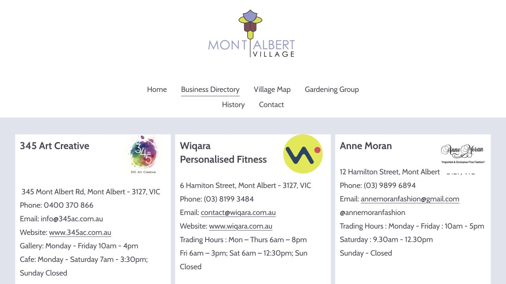
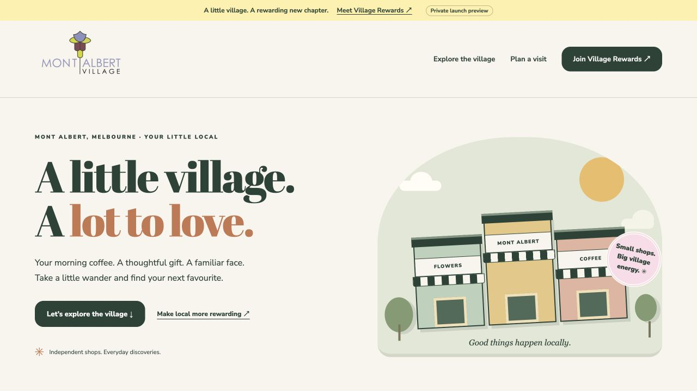

Prepared for the Mont Albert village community · 28 October 2026
Discussion proposal · Private launch preview
Your village website. A reason to visit again.
Bring Mont Albert’s traders, local character and Village Rewards together in one useful destination—so visitors can find a business, plan a visit and take the next step.
The proposal: when Mont Albert launches Village Rewards, refresh the village website at the same time. Keep Mont Albert’s identity at the centre, use an interactive trader explorer to support discovery, and give residents a clear route into the rewards app.
Connection update · 29 October 2026: the preview now reads published rewards and anonymous 24-hour check-in counts from Village Rewards. Seventeen active app shops are linked to their directory cards. Activity refreshes about every 30 seconds; test offers are labelled examples. This is recorded app activity, not a measure of people currently inside a shop.
A strong local foundation to build on
The current site already holds useful business contact details, hours, local history and community gardening information. Its photography conveys a recognisable village. These are assets to preserve, rather than discard. The opportunity is to make that material easier to act on.
Review scope: public homepage, business directory, map, history and gardening pages, plus inspection of the rendered desktop interface and page structure. This is a focused experience review, not a performance, security, traffic or search-ranking audit.
43business listings captured from the current directory
6street choices in the new explorer
1connected village discovery and rewards entry point
What changes for visitors—and traders
Visitor task
Observed today
New experience and intended benefit
Find the right local
The directory is a long, mixed-order page. No search input or category controls were found in the inspected interface.
Built in preview Search names, categories and addresses. Matching shops light up; directory view provides a faster alternative. Intended benefit: fewer steps from a visitor’s need to a suitable trader.
Understand where to go
The village map is a separate image-based page.
Built in preview Switch among Hamilton Street, Mont Albert Road, Churchill Street and nearby streets. Every trader card links to directions. The street illustration is labelled schematic, not a surveyed map.
Contact a business
Phone numbers are visible as text. No telephone links were found on the inspected directory page.
Built in preview Consistent Call, Directions and Website actions, where details exist. Hours sit in the same card with a reminder to confirm them. Intended benefit: less copying, searching and page-hopping.
Come back later
No saved-trader function was visible in the reviewed directory.
Built in preview Save favourites in the browser and copy a link to a trader card. Lists are device-local; they are not rewards accounts. Intended benefit: make it easier to return to a discovery.
Find Village Rewards
No rewards entry point was visible on the reviewed homepage or directory.
Built in preview Village Rewards is introduced alongside the village, with a direct link to the supplied app. Listing and rewards participation remain distinct. Intended benefit: a clear route from village interest to the rewards service.
Explore comfortably
The current directory uses dense, free-form listing blocks. The reviewed homepage has no H1; directory business headings are H4s.
Built in preview Responsive layouts, a clear page heading, labelled controls, keyboard-accessible trader cards and reduced-motion support. Street and directory views give visitors a choice. Full accessibility conformance still needs an independent audit.
Feel the village character
History and gardening have dedicated pages, with useful local stories.
Built in preview Keep those destinations and link them from visit planning. Illustrated shops, welcoming windows and gentle street motion create a distinctive introduction without replacing the community content.
Keep information consistent
Listings show inconsistent address formatting and some typos, including “Hamiton” and “Steet”. Some unit and floor details need clarification.
Built in preview One structured trader dataset supports both views and cards. Common street spellings are normalised. A trader-confirmation round and an editing workflow remain launch tasks; the preview does not include an admin CMS.

Existing directory, reviewed 28 October 2026. This proposal changes how visitors discover and act on the information, while retaining the underlying business details.

New launch preview: Mont Albert’s existing logo remains the lead identity, with clear entry points for village discovery and Village Rewards.
What we can say to the association
“Mont Albert already has the businesses and the village character. We’re giving people a more useful way to discover them—and a clear path into Village Rewards when the program launches.”
This is a proposed improvement in usability and engagement. It is not evidence of increased foot traffic, spending, membership or search rankings. Those outcomes should be measured after launch, rather than promised in advance.
Rewards: one journey, clear boundaries
Ready in this website preview
Mont Albert-led identity with a clearly introduced Village Rewards section.
All 43 directory businesses can be found without enrolling.
Live app rewards and anonymous activity on connected shop cards, with testing offers labelled separately.
Confirm before a public launch
Production-ready member joining, earning and redemption flows, tested separately from this website.
Which traders participate, each reward’s conditions, and the approved earning model.
Merchant consent for rewards badges, offers, names, photos and any promotional claims.
Terms, privacy information, support ownership and a confirmed launch date.
The supplied app link, public rewards catalog and anonymous shop activity counts are connected. The new website does not itself issue stamps, award points, create memberships, redeem rewards or verify eligibility. The existing app must be approved for its own production use.
A practical website takeover
Prepare and agree
Review the private preview with the association. Confirm the trader list, contact details, categories, addresses, floor information, opening hours and approved branding. Retain the current map, history, gardening and contact destinations during the transition.
Connect the launch
Approve rewards participation and app readiness, add confirmed launch copy and offers, and test the complete phone journey from a village webpage to membership and merchant redemption. Confirm who maintains the directory and handles enquiries.
Plan the migration
Obtain the site owner’s domain and hosting authorisation. Inventory existing URLs, preserve valuable pages, map redirects, check titles and search indexing settings, prepare a backup and a rollback route, and schedule a controlled cutover. The current montalbertvillage.com domain has not been changed.
Measure and improve
With an agreed privacy approach, establish a baseline and track trader-card openings, directions, call and website clicks, and outbound rewards-app visits. The app team should separately measure completed joins and verified activity. Review findings with traders after launch.
What success should look like
Start by testing simple tasks: find a café, locate a florist, call a business, save a trader, and reach Village Rewards on a phone. Compare completion and time with the current site. Then assess actual visitor behaviour after launch.
Suggested indicators are successful trader discovery, useful contact actions, rewards-app visits and completed joins. Interpret results with traffic volume, campaign activity and seasonality in mind. There are no analytics results or uplift estimates in this proposal; analytics collection is not enabled in the preview.
The next conversation
Use the preview to agree the visitor experience, then confirm the directory and rewards launch details. The association can assess something concrete before committing to a domain switch.
Current business details are transcribed from the directory, not independently confirmed by every business. Categories are an editorial organisation of those listings. The main current-site observations were checked in the rendered desktop interface and source. This brief is prepared for discussion; it has not been sent to the association.